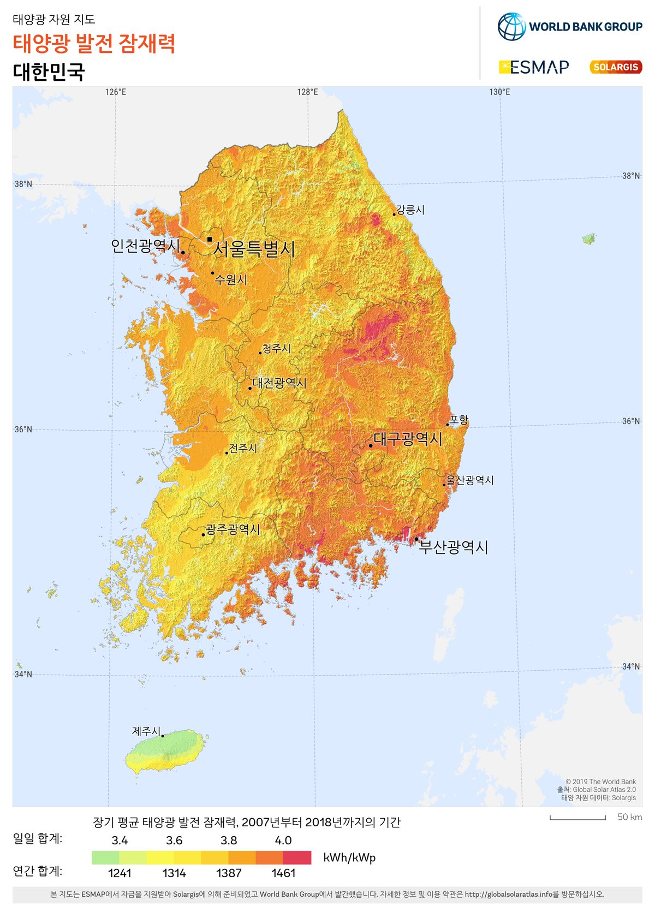

영암·해남 농어민 협동조합연합회, 최대 4.5GW 태양광 기업 매칭 협약…기후부·전남광주·9개 군은 따로 이격거리 규제 개선 협약

기업재생에너지재단 매칭포럼서 연합회가 공유수면·간척지 활용한 주민 주도 개발, 재단은 기업 구매 수요 연결…부지·구매 기업·연합회 회원 수·수익 배분은 아직 안 나와
전남 영암·해남의 농어민이 꾸린 협동조합 연합회가 최대 4.5GW 규모의 태양광을 개발해 재생에너지를 사려는 기업과 잇는 협약을 맺었다. 기업재생에너지재단은 28일 서울 웨스틴조선 호텔에서 재생에너지 수요기업과 산업계, 지자체 관계자 등 300명이 참석한 가운데 '2026 아시아태평양 재생에너지 매칭포럼'을 열고 영암해남 농어민 탄소중립협동조합연합회와 태양광 개발·기업 구매자 매칭 협약을 맺었다. 연합회는 영암·해남의 공유수면과 간척지 등을 활용해 주민 주도로 지역 소득과 이어지는 사업을 개발하고, 재단은 기업의 재생에너지 조달 수요와 이를 연결하는 역할을 맡는다. 4.5GW는 국내에 한 해 보급되는 재생에너지 설비량과 맞먹는 규모이지만 협약상 최대치이며, 사업 부지와 사업비, 착공 시기, 구매 기업, 연합회 회원 수와 수익 배분 방식은 공개되지 않았다. 이와 별도로 이날 개막식에서는 기후에너지환경부와 전남광주통합특별시, 담양·곡성·화순·해남·영암·무안·함평·장성·신안 9개 군 등 11개 기관·지자체가 'RE100 산업생태계 구축을 위한 지자체 규제혁신' 협약을 맺고 이격거리·개발행위허가 규제 개선과 민원 해결, 전력계통·산업입지 여건 개선에 힘을 모으기로 했다. 민형배 전남광주통합특별시장은 기조강연에서 호남권 반도체 클러스터에 약 6.3GW의 전력이 필요하다며 직접 전력구매계약(PPA) 공급체계와 전남광주에너지공사 중심의 관리체계를 추진하겠다고 밝혔고, 우태희 기업재생에너지재단 이사장은 따져야 할 것은 "선언의 크기가 아니라 실행의 성과"라고 말했다.
시민에너지 관점
농어민이 협동조합 연합회를 꾸려 GW 단위 태양광의 개발 주체로 나서고 기업 구매와 바로 이어지는 구조는, 재생에너지의 이익이 땅과 바다를 내준 지역에 남을 수 있는 길을 보여 준다. 네덜란드는 2019년 기후협약에서 2030년까지 육상 풍력과 태양광의 50%를 지역 주민과 공동체가 소유하도록 한다는 목표를 세웠다. 농어민 조직이 이만한 규모를 감당할 수 있겠느냐는 우려가 있지만, 규모가 클수록 누가 출자하고 수익을 어떻게 나누는지를 처음부터 정해 두어야 개발권이 외부 자본에 넘어가 주민에게 임대료만 남는 일을 막을 수 있다. 연합회와 재단은 출자 구조와 수익 배분을 공개하고, 같은 날 맺은 규제혁신 협약의 이격거리 완화도 주민이 소유하는 사업부터 먼저 적용해야 한다.
출처: 전기신문 2026-10-28 김진후 원문 보기
霊岩・海南の農漁民協同組合連合会、最大4.5GWの太陽光で企業マッチング協定…気候部・全南光州・9郡は別途、離隔距離規制の改善協定
企業再生エネルギー財団のマッチングフォーラムで、連合会が公有水面・干拓地を活用し住民主導で開発、財団は企業の購入需要とつなぐ…用地・購入企業・連合会の会員数・収益配分はまだ明らかでない
全羅南道霊岩（ヨンアム）・海南（ヘナム）の農漁民がつくる協同組合連合会が、最大4.5GW規模の太陽光発電を開発し、再生可能エネルギーを買いたい企業とつなぐ協定を結んだ。企業再生エネルギー財団は28日、ソウルのウェスティン朝鮮ホテルで、再エネ需要企業や産業界、自治体の関係者など300人が参加するなか「2026アジア太平洋再生可能エネルギー・マッチングフォーラム」を開き、霊岩海南農漁民カーボンニュートラル協同組合連合会と太陽光開発・企業購入者マッチング協定を結んだ。連合会は霊岩・海南の公有水面や干拓地などを活用して住民主導で地域の所得につながる事業を開発し、財団は企業の再エネ調達需要とそれを結びつける役割を担う。4.5GWは韓国で1年間に導入される再エネ設備量に匹敵する規模だが、協定上の上限であり、事業用地や事業費、着工時期、購入企業、連合会の会員数や収益配分の方法は公表されていない。これとは別に、同日の開幕式では気候エネルギー環境部と全南光州統合特別市、潭陽・谷城・和順・海南・霊岩・務安・咸平・長城・新安の9郡など11の機関・自治体が「RE100産業エコシステム構築のための自治体規制革新」協定を結び、離隔距離・開発行為許可規制の改善や住民苦情の解決、電力系統・産業立地条件の改善に協力することにした。閔亨培（ミン・ヒョンベ）全南光州統合特別市長は基調講演で、湖南圏の半導体クラスターに約6.3GWの電力が必要だとして、直接電力購入契約（PPA）の供給体制と全南光州エネルギー公社を中心とする管理体制を進めると述べ、禹泰熙（ウ・テヒ）企業再生エネルギー財団理事長は、問うべきは「宣言の大きさではなく実行の成果」だと語った。
市民エネルギーの視点
農漁民が協同組合連合会をつくってGW単位の太陽光の開発主体となり、企業の購入に直接つながる仕組みは、再エネの利益が土地と海を差し出した地域に残る道を示している。オランダは2019年の気候協定で、2030年までに陸上風力と太陽光の50%を地域住民とコミュニティが所有するという目標を掲げた。農漁民の組織がこれほどの規模を担えるのかという懸念もあるが、規模が大きいほど、誰が出資し収益をどう分けるかを最初から決めておかなければ、開発権が外部資本に渡り住民には賃料しか残らない事態を防げない。連合会と財団は出資構造と収益配分を公開し、同じ日に結ばれた規制革新協定による離隔距離の緩和も、住民が所有する事業から先に適用すべきだ。
出典: 電気新聞（韓国） 2026-10-28 金ジンフ 原文を読む
韩国灵岩、海南农渔民合作社联合会签署最高4.5GW光伏企业对接协议…气候部、全南光州与9个郡另签放宽间隔距离规制协议
在企业可再生能源财团对接论坛上，联合会将利用公有水面和围垦地由居民主导开发，财团负责对接企业采购需求…用地、采购企业、联合会会员数和收益分配尚未公布
韩国全罗南道灵岩、海南两地农渔民组建的合作社联合会，签署协议开发最高4.5GW规模的光伏发电，并与有意购买可再生能源的企业对接。企业可再生能源财团28日在首尔威斯汀朝鲜酒店举办"2026亚太可再生能源对接论坛"，可再生能源需求企业、产业界和地方政府等300人出席。财团在论坛上与灵岩海南农渔民碳中和合作社联合会签署了光伏开发与企业买方对接协议。联合会将利用灵岩、海南的公有水面和围垦地等，由居民主导开发与地方收入挂钩的项目，财团则负责把这些项目与企业的可再生能源采购需求连接起来。4.5GW相当于韩国一年新增的可再生能源装机量，但这是协议规定的上限，项目用地、投资额、开工时间、采购企业以及联合会会员数和收益分配方式均未公布。此外，当天开幕式上，气候能源环境部、全南光州统合特别市以及潭阳、谷城、和顺、海南、灵岩、务安、咸平、长城、新安9个郡等11个机关和地方政府另行签署"构建RE100产业生态系统的地方规制革新"协议，将合力改善间隔距离和开发行为许可规制、化解民怨、改善电网与产业选址条件。全南光州统合特别市长闵亨培在主旨演讲中表示，湖南圈半导体集群需要约6.3GW电力，将推进直接购电协议（PPA）供电体系和以全南光州能源公社为中心的管理体系；企业可再生能源财团理事长禹泰熙则表示，需要检验的"不是宣言的规模，而是执行的成果"。
市民能源视角
农渔民组建合作社联合会、成为GW级光伏的开发主体并直接对接企业采购，这一结构为可再生能源收益留在出让土地和海域的地方指出了一条路。荷兰在2019年的气候协议中提出目标：到2030年，陆上风电和光伏的50%由当地居民和社区拥有。有人担心农渔民组织能否承担如此规模，但规模越大，越要从一开始就定好由谁出资、收益如何分配，才能防止开发权落入外部资本手中、居民只拿到租金。联合会和财团应公开出资结构和收益分配，同日签署的规制革新协议所放宽的间隔距离，也应优先适用于居民拥有的项目。
来源: 电气新闻（韩国） 2026-10-28 金振厚 查看原文
Yeongam–Haenam farmers' and fishers' cooperative federation signs up to 4.5GW solar matching deal with corporate buyers; climate ministry, Jeonnam-Gwangju and nine counties sign separate pact to ease setback rules
At a renewable energy matching forum, the federation is to develop projects on public waters and reclaimed land under resident leadership while the foundation links them to corporate demand; sites, buyers, membership and profit sharing not yet disclosed
A federation of cooperatives formed by farmers and fishers in Yeongam and Haenam, South Jeolla Province, has signed an agreement to develop up to 4.5GW of solar power and connect it with companies seeking to buy renewable energy. The Corporate Renewable Energy Foundation held the "2026 Asia-Pacific Renewable Energy Matching Forum" at the Westin Josun Seoul on Oct. 28, attended by 300 people from renewable energy buyers, industry and local governments, and there signed a solar development and corporate buyer matching agreement with the Yeongam-Haenam Farmers' and Fishers' Carbon Neutral Cooperative Federation. The federation will use public waters and reclaimed land in Yeongam and Haenam to develop projects under resident leadership that are tied to local income, while the foundation will link them to companies' renewable energy procurement needs. The 4.5GW figure, comparable to the renewable capacity Korea installs in a year, is a ceiling under the agreement; sites, project cost, construction timing, buyers, the federation's membership and how profits will be shared have not been disclosed. In a separate agreement signed at the opening ceremony, 11 bodies — the Ministry of Climate, Energy and Environment, the Jeonnam-Gwangju Integrated Special City and nine counties, Damyang, Gokseong, Hwasun, Haenam, Yeongam, Muan, Hampyeong, Jangseong and Sinan — pledged to improve setback-distance and development-permit rules, resolve local complaints and improve grid and industrial-site conditions under a "local regulatory innovation for an RE100 industrial ecosystem" pact. In a keynote, Jeonnam-Gwangju Integrated Special City Mayor Min Hyung-bae said the Honam region's semiconductor cluster will need about 6.3GW of power and that the city will pursue a direct power purchase agreement (PPA) supply system and a management system centred on the Jeonnam-Gwangju Energy Corporation, while foundation chairman Woo Tae-hee said what matters is "not the size of the declaration but the results of implementation."
Citizen Energy View
A structure in which farmers and fishers form a cooperative federation, act as developers of gigawatt-scale solar and sell directly to corporate buyers points to a way for renewable energy profits to stay in the communities that give up their land and sea. In its 2019 Climate Agreement the Netherlands set a goal that 50% of onshore wind and solar on land should be owned by local residents and communities by 2030. Some doubt that a farmers' organisation can handle projects on this scale, but the larger the scale, the more important it is to settle from the start who invests and how profits are shared, or development rights will pass to outside capital and leave residents with nothing but rent. The federation and the foundation should disclose the ownership structure and profit sharing, and the setback easing promised in the same day's regulatory pact should apply first to projects owned by residents.
Source: Electric Times (Korea) 2026-10-28 Kim Jin-hu Read the original